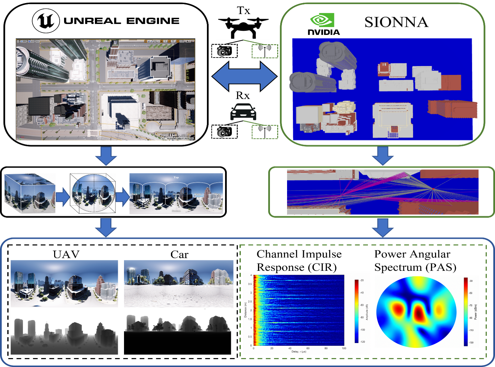

MULTIMODAL DATASET
PanoLAMP
Low-altitude channel multipath prediction using panoramic perception and vision-language models.
Scientific Software · Datasets · Research
MULTIMODAL DATASETS
Discover PanoLAMP and MiSAIL, with a dedicated page for each dataset.
Loading recorded activity… About these counts
Download clicks open dataset instructions or download links; completed downloads are not tracked.

Low-altitude channel multipath prediction using panoramic perception and vision-language models.
A dedicated space for MiSAIL. Dataset details and access information will be added here.